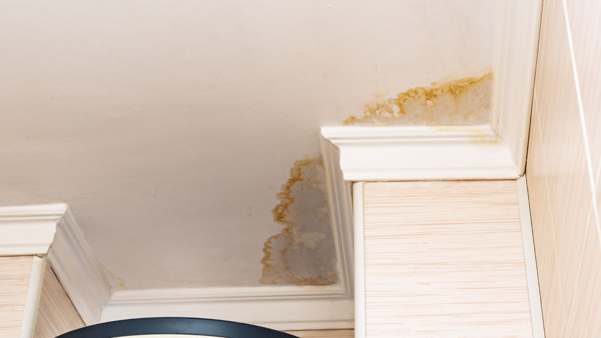

Water Damage Restoration in Caldwell, ID
Whether you own, rent or manage the property, good photos taken in the first hour make insurance claims and landlord conversations much easier. Here is the shot list, followed by what happens once we arrive.
- Insurance claims
- Rentals
- Burst pipes
- Creek flooding

The ten shots that protect your claim
Use your phone. Turn on location and timestamps if you can. Take more than you think you need.
- 1 · Wide shot of each affected roomFrom the doorway, showing the whole space.
- 2 · The sourceThe broken pipe, failed hose, water heater, or where water entered.
- 3 · Close-ups of the damageStains, swelling, warped floors, wet drywall.
- 4 · Water level on wallsA tape measure in the frame helps.
- 5 · Labels and serial numbersWater heater, washer, any appliance involved.
- 6 · Damaged belongingsBefore moving them, then each item individually.
- 7 · Ceilings belowIf the leak was upstairs.
- 8 · A short video walkthroughNarrate what happened and when.
- 9 · Outside the houseFor creek, ditch or surface water, show the path in.
- 10 · Your shutoffShowing it’s closed, with a timestamp.
Photos done? Now get the water out.Every hour of standing water adds to the damage. Caldwell-area crews are ready to help.
Call (321) 985-3339What we document for you
We keep our own records that insurers rely on: moisture readings at the start and each day after, a map of affected areas, a list of materials removed, and photos of equipment placement. Ask for a copy.
For Caldwell rentals, share that documentation with both the tenant and the landlord. It shows when the problem was reported, what was done and when the space was dry.
For homes near Indian Creek or farm drains, note that flood from surface water is often excluded from standard policies, while a burst pipe usually isn’t. The source matters, so photograph it clearly.
Common questions
Should I call insurance or a restoration company first?
Stop the water and take photos first. Then you can call both. Most insurers expect you to take reasonable steps to prevent further damage, which includes starting extraction and drying.
Can I throw out damaged items before the adjuster comes?
Photograph everything first, and keep samples of materials like carpet if you can. Ask your insurer before discarding large items.
I rent. Who calls the restoration company?
Usually the landlord or property manager authorizes the work. Notify them right away, in writing, and share your photos.